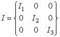

The angular momentum vector L of a rotating rigid body is
L = I ω
where I is the inertia tensor and ω is the angular velocity vector. The inertia tensor is easy to compute if xyz-axes are chosen to be the principal axes of the body. The principal axes of a rectangular box are normal to the box sides (parallel to the edges) because these directions are the symmetry axes of the rigid body. The rectangular box with uniform mass distribution and sides of length a, b, and c, the inertia tensor in the principal axes coordinate system is

where I1=M(b2+c2)/12, I2=M(a2+c2)/12, and I3=M(a2+b2)/12 and where M is the total box mass.
The inertia tensor is diagonal and easy to compute in the body frame (a non-inertial frame fixed to the object) but not in the space frame (an inertial frame fixed in space). If we wish to work in the space frame, we can perform a volume integral for each matrix element. A better way is to transform the inertia tensor from the body frame into the space frame using the rotation transformation R that connects the two frames:
Ispace = R-1 Ibody R
The transformation matrix R connecting the two frames is constructed by first rotating the box through an angle φ about the z direction and then tilting the box by an angle α. This reference frame transformation is performed in the fixed relation workpanel and the transformed inertia tensor is displayed in the space algebra window in the Rotation About a Fixed Axis model.